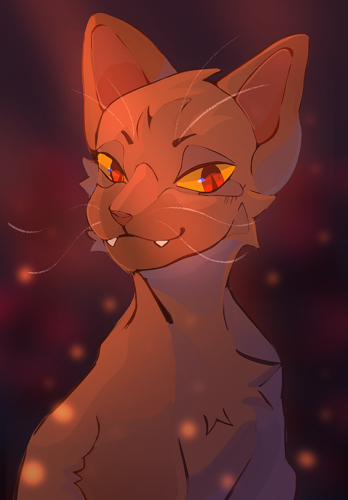
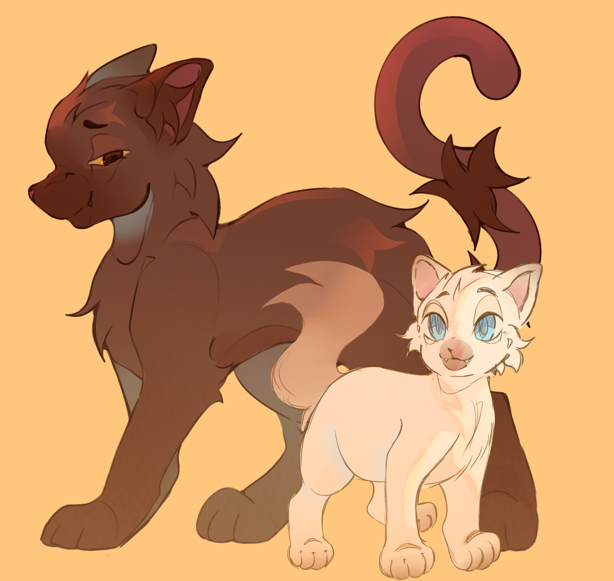
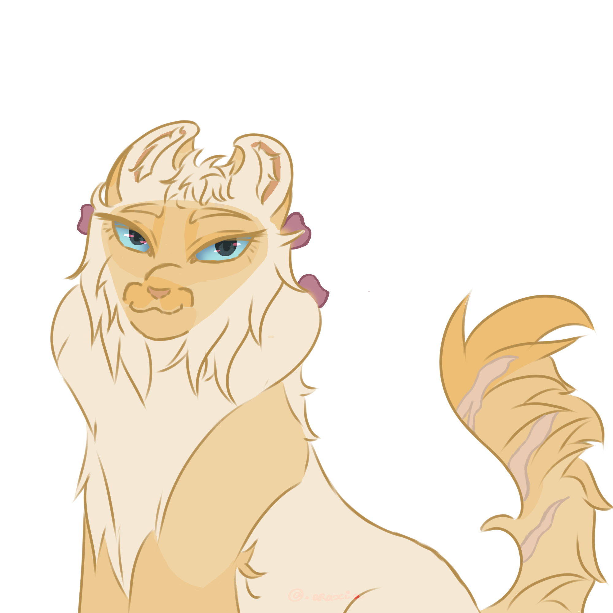

PETIT GALOPIN
✦LUNES
2 lunes
GENRE
Mâle cisgenre
SEXUALITÉ
Inconnue
RANG
Chaton
MBTI
ENTP
SIGNE ASTROLOGIQUE
Signe du Loup
AUTEUR
@Oriyakii
✦ Justification du nom ✦
Petit Galopin n’a pas reçu son nom dès sa naissance. Il a fallu un peu de temps avant que cela ne devienne une évidence. Très vite, on a remarqué qu’il ne tenait déjà pas en place, il gigotait, rampait pour aller on ne sait où. Même pour la nourriture, il se montrait déjà un peu difficile… bref, un petit caractère bien affirmé pour un si jeune chaton.
Psychologie
✦Physique
✦
Description
Petit Galopin est un adorable chaton Chocolate Point Sépia. Pour l’instant, sa couleur reste très claire, car il n’a pas encore développé son pelage définitif. Son poil duveteux et mi-long le rend tout doux. Il mesure seulement 10 cm de haut pour environ 500 g, et ses yeux bleus-gris illuminent son visage petit visage.
Trivia
✦- Galopin a la queue dénuée de poils.
- Galopin possède des traits durs, son visage est souvent jugé malveillant.
- Ses yeux donnent l'impression qu'il a du malice dans le regard.
- Son pelage est toiletté vers l'arrière.
Relations familiales
✦
Étoile de Framboisier
Étoile de Framboisier est la figure paternelle de Galopin. D’un naturel pacifique et bienveillant, il occupe une place essentielle dans la vie de Petit Galopin. C’est sans doute de lui que Galopin tiendra plus tard son éloquence et son charisme.

Petit Courlis
Petit Courlis, quant à lui, est le frère de Petit Galopin. Là où Galopin aime simplement plaisanter et faire des farces, Petit Courlis se montre bien plus cruel et provocateur. Malgré tout, il adore profondément son frère. C’est probablement auprès de lui que Galopin développera plus tard certains de ses comportements les plus douteux.